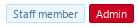

Синтаксис шаблонов
Синтаксис шаблонов XenForo 2 - мощный инструмент как для разработчиков, так и для администраторов форумов, дающий вам полный контроль над макетом Ваших страниц XenForo.
Лучшие практики
- Теги XenForo, по соглашению, пишутся строчными буквами
lowercase. - Все теги XenForo имеют префикс пространства имен
xf:.
Полезная информация
Комментирование ваших шаблонов
Если вы хотите закомментировать код шаблона (или вдохновляющее сообщение), который вы не хотите отображать в исходном коде финальной страницы, вы можете использовать тег xf:comment.
<xf:comment>
Если вы перестанете смотреть на мир с точки зрения того,
что вам нравится и что вам не нравится, и будете видеть вещи такими,
какие они есть на самом деле, вы найдете в своей жизни гораздо больше покоя.
</xf:comment>
Включение другого шаблона в шаблон
Тег xf:include позволяет вам включить другой шаблон в ваш текущий шаблон.
<xf:include template="my_template" />
Просто установите атрибут template для имени шаблона, который вы хотите включить.
Макросы шаблона
Макросы шаблона - очень мощный аспект синтаксиса шаблона XenForo.
Как правило, вы должны использовать макрос в любом месте, где вы будете использовать функцию или подпрограмму на языке программирования.
Для не программистов я бы резюмировал это следующим образом: либо используйте макрос в любом месте, где вы хотите создать одно и то же несколько раз в нескольких разных файлах, либо для создания чего-то другого при разных обстоятельствах (это будет вероятно, будет иметь больше смысла, если вы посмотрите руководство по определению макроса).
Warning
По причинам удобочитаемости не следует использовать тег макроса в качестве переменной. Вместо этого вы должны использовать тег Set и обращаться с переменной, как с любой переменной шаблона.
Определение макроса
<xf:macro
name="my_macro_name">
<!-- Содержимое вашего макроса -->
</xf:macro>
В самом простом случае макрос может быть определен с помощью атрибута name и содержимого, которое вы хотите повторить внутри тега макроса.
Note
Когда вы используете макрос в нескольких файлах, лучше всего поместить макрос в собственный шаблон.
Аргументы макроса
<xf:macro
name="my_macro_name"
arg-message="My amazing macro message!">
<h1>Сообщение</h1>
<p>{$message}</p>
</xf:macro>
В этом примере макрос определен со значением по умолчанию для arg-message (My amazing macro message!).
Это значение было бы переопределено, если бы макрос был вызван с аргументом сообщения.
Иногда необходимо пометить аргумент как обязательный. Это можно сделать, установив значение аргумента на ! в определении макроса..
Включение и использование макросов
<xf:macro template="my_macro_template" name="my_macro_name" />
В самом простом случае вы подключаете макрос, устанавливая атрибут name и оставляя тег пустым.
Note
При использовании тега макроса следует использовать самозакрывающуюся форму тега, чтобы позволить кому-то более легко различать разницу между определением и использованием макроса.
Аргументы макроса
вы также можете предоставить макросу аргументы:
<xf:macro template="my_macro_template" name="my_macro_name" arg-argName="argValue" />
Где argName - имя аргумента макроса.
Note
вы должны использовать lowerCamelCase для имен Ваших аргументов макроса.
Управляющие структуры шаблонов
Синтаксис шаблонов XenForo 2 поддерживает определенные управляющие структуры, чтобы облегчить выполнение определенных задач.
Тег if
Тег шаблона if может использоваться для условного отображения некоторого HTML или части шаблона.
<!-- Показывает контент, только если пользователь вошел в систему... -->
<xf:if is="$xf.visitor.user_id">
<!-- Сделайте что-нибудь... -->
</xf:if>
Тег if принимает следующие атрибуты:
is- Условие, при выполнении которого должно отображаться содержимое тегов.
Условия
Атрибут is поддерживает несколько логических операторов:
OR- Используется для связывания альтернативных условий. (Альтернативы:||)AND- Используется для связывания дополнительных условий. (Альтернативы:&&)!- Поставьте перед условием для его инвертирования. (Известен как: 'not')XOR- Возвращает истину, если истинно только одно из двух условий. (Известно как: Исключающее ИЛИ)
Теги Else/Else-If
Теги else и else-if используются вместе с тегом if для условного отображения HTML в соответствии с названием.
Пример использования else:
<xf:if is="$xf.visitor.is_admin">
<!-- Содержимое здесь будет показано только Администраторам... -->
<xf:else />
<!-- Содержимое здесь будет показано всем, кто не является Администратором! -->
</xf:if>
Пример использования else-if:
<xf:if is="$xf.visitor.is_admin">
<!-- Содержимое здесь будет показано только Администраторам... -->
<xf:elseif is="$xf.visitor.is_moderator" />
<!--
Содержимое здесь будет показано только модераторам
(за исключением пользователей, которые также являются администраторами).
-->
<xf:else />
<!--
Содержимое здесь будет показано всем,
кто не является администратором или модератором.
-->
</xf:if>
Как видите, после выполнения условия остальная часть оператора if игнорируется. (В этом случае, если пользователь является администратором, запускается верхний раздел xf:if, но затем остальная часть оператора if игнорируется.)
Тег for-each
Тег for-each позволяет вам перебирать массив элементов, печатая блок HTML для каждого элемента.
<xf:set var="$names" value="{{ ['Patrick', 'Theresa', 'Kimball', 'Wayne', 'Grace'] }}" />
<xf:foreach loop="$names" key="$key" value="$name" i="$i">
<p>Привет, {$name}. Это имя под номером {$i}. Ключ массива этого элемента: {$key}</p>
</xf:foreach>
Для каждого тега используются следующие атрибуты:
loop- Массив для обхода.key- Имя переменной для использования в цикле для получения ключа текущего элемента массива. Может быть целым числом (обычный массив) или строкой (ассоциативный массив).value- Имя переменной для использования в цикле, содержащее текущий элемент массива.i- Имя переменной для использования в цикле, содержащее текущий индекс.istart— Позволяет установить начальное значение для i (0 по умолчанию).if— Условие отображения блока HTML. Аналогично тому, если бы внутри тега foreach был расположен if.
Пример вывода
Привет, Patrick. Это имя под номером 1. Ключ массива этого элемента: 0
Привет, Theresa. Это имя под номером 2. Ключ массива этого элемента: 1
Привет, Kimball. Это имя под номером 3. Ключ массива этого элемента: 2
Привет, Wayne. Это имя под номером 4. Ключ массива этого элемента: 3
Привет, Grace. Это имя под номером 5. Ключ массива этого элемента: 4
Теги шаблонов
Тег avatar
Вставляет аватар пользователя на страницу.
<xf:avatar user="{$xf.visitor}" size="o" canonical="true" />
Тег аватара принимает следующие атрибуты:
user- Объект пользователя XenForo, для которого создается аватар.size- Размер создаваемого изображения. (Смотрите размеры изображения).canonical- Использовать ли полный URL-адрес, оптимизированный для SEO. Это значение соблюдается только для аватаровcustom.notooltip- Должна ли быть отключена всплывающая подсказка, отображаемая при наведении курсора на аватар.forcetype- Может использоваться для принудительного получения аватаровgravatarилиcustom, задав значение любого из них.defaultname- Имя пользователя, которое будет использоваться, если атрибутuserсодержит недопустимого пользователя.
Размеры изображения
Если указан аватар недопустимого размера, код вернется к размеру 's'.
o-384pxh-384pxl-192pxm-96pxs-48px
Тег breadcrumb
Изменяет хлебные крошки страницы.
<xf:breadcrumb href="{{ link('my_page') }}">{{ phrase('my_page_name') }}</xf:breadcrumb>
Тег хлебной крошки принимает следующие атрибуты:
href- Ссылка, которую нужно установить для последнего элемента в хлебных крошках.
Значение тега можно использовать для установки имени последнего элемента в строке навигации.
Альтернативные варианты использования
<xf:breadcrumb source="$category.getBreadcrumbs(false)" />
вы также можете программно определить свою собственную навигационную цепочку, вызвав свою функцию в атрибуте source тега хлебной крошки.
Параметр source по существу принимает массив объектов с атрибутами href и value (многомерный массив), где каждый объект является элементом навигации.
Note
Если вы хотите изменить корневую цепочку навигации, вы можете изменить параметр «Корневая цепочка навигации» в разделе параметров «Основная информация».
Тег button
Добавляет элемент кнопки с соответствующими классами и, при необходимости, иконку.
<xf:button icon="save"></xf:button>
Тег кнопки принимает следующие атрибуты:
icon- Класс иконки, применяемый к кнопке. (Смотрите иконки кнопок)
Иконки кнопки
По умолчанию кнопки XenForo поддерживают следующие иконки (созданные с помощью CSS):
addconfirmwriteimportexportdownloaddisableeditsavereplyquotepurchasepaymentconvertsearchsortuploadattachloginrateconfigrefreshtranslatevoteresulthistorycancelpreviewconversationboltlistprevnextmarkReadnotificationsOnnotificationsOffmergemovecopyapproveunapprovedeleteundeletestickunsticklockunlock
Тег callback
Выполняет метод обратного вызова PHP.
<xf:callback class="Vendor\Addon\Class" method="getX" params="['abc']"></xf:callback>
Тег обратного вызова принимает следующие атрибуты:
class- Класс (из корневого пространства имен), содержащий запускаемый метод.method- Метод для запуска. (Смотрите методы обратного вызова)params- Массив параметров, передаваемых методу.
Методы обратного вызова
Чтобы метод считался методом обратного вызова, он должен быть назван соответствующим образом, иначе будет выдана ошибка 'callback_method_x_does_not_appear_to_indicate_read_only'. Чтобы он считался доступным только для чтения, имя метода должно начинаться с одного из следующих префиксов:
arecancountdatadisplaydoesexistsfetchfilterfindgethasispluckprintrenderreturnshowtotalvalidateverifyview
Тег CSS
Подключает файл шаблона CSS или LESS.
<xf:css src="mycss_file.css" />
Тег CSS принимает следующие атрибуты:
src- Файл шаблона CSS или LESS для включения.
Альтернативные варианты использования
<xf:css>
html, body {
font-family: "Roboto", sans-serif;
}
</xf:css>
Если тег CSS не пустой, все в теге будет преобразовано во встроенный CSS.
Дальнейшие примечания
Забудьте о подключении [CSS] через файлы. Скопируйте и вставьте его в новые шаблоны.
Крис Д., разработчик XenForo Источник: https://xenforo.com/community/threads/including-external-library-js-and-css.136153/post-1185631
Тег JS
Подключает файл JavaScript.
<xf:js src="myaddon/vendor/scripts/myjs_file.js" />
Тег JS принимает следующие атрибуты:
src- Файл JS для включения в шаблон.prod- Файл JS для включения в шаблон, только для режима продакшена.dev- Файл JS для включения в шаблон, только для режима разработки.min- Включать или не включать уменьшенную версию файла. (Заменяет.jsна.min.js) - Соблюдается только в продакшен-режиме.addon- Следует ли использовать URL-адрес JS для разработки. - Соблюдается только в режиме разработки.
Warning
Атрибут src нельзя использовать вместе с тегами prod или dev.
Альтернативные варианты использования
<xf:js>
alert("Я знаю, правда ранит. На самом деле это биологически основано.");
</xf:js>
Если тег JS не пуст, все в теге будет преобразовано во встроенный JS.
Дальнейшие примечания
Файлы JavaScript обслуживаются относительно каталога /js. Хотя это не рекомендуется, вы также можете включать в этот тег внешние ресурсы.
Хороший пример этого тега - шаблон editor.
Тег set
Тег set позволяет вам создать ссылку на другую переменную или создать новую. вы должны использовать тег set везде, где вы используете переменную в языке программирования.
<xf:set var="$visitor" value="{$xf.visitor}" />
Warning
Не используйте тег Set для группы элементов, которые вы хотите использовать в нескольких шаблонах, вместо этого следует использовать тег макроса.
Warning
Имя переменной (атрибут var) должно начинаться с символа $.
Тег set принимает следующие атрибуты:
var- Имя переменной, которую вы хотите определить (по сути, псевдоним).value- Переменная, на которую нужно ссылаться, или значение переменной.
Альтернативные варианты использования
<xf:set var="$myVariableName">
Мое значение переменной!
Это может быть обратный вызов или просто группа фраз.
</xf:set>
Если атрибут value не указан и тег не пуст, значение переменной будет установлено равным содержимому тега.
Warning
Когда вы используете тег Set в этой форме, значение будет экранировано, и результирующее значение будет строкой.
Атрибут value, хотя он не поддерживает HTML или HTML-подобные теги, не имеет этого ограничения.
Тег Likes
Отображает количество лайков посту и нескольких пользователей, которым понравился пост.
<xf:likes content="{$post}" url="" />
Тег лайков принимает следующие атрибуты:
content- СущностьXF\Entity\PostилиXF\Entity\ProfilePost, для которой отображается текст «Нравится».url- URL-адрес, отображаемый при нажатии на текст «Нравится».
Формат
Вы, лиссабон, эхо и еще 2 человека
Формат [👍 abc и x других] (где 👍 «палец вверх» обозначает иконку «нравится», а abc обозначает имена трех последних пользователей, которым понравился пост).
Тег Sidebar
Смотрите Секционные теги.
Тег SideNav
Смотрите Секционные теги.
Тег Title
Устанавливает заголовок страницы как на странице в теге h1, так и во вкладке браузера.
<xf:title>{{ phrase('my_page_title') }}</xf:title>
Дальнейшие примечания
Хотя заголовок, конечно, можно жестко запрограммировать, настоятельно рекомендуется использовать фразу как для интернационализации, так и для дополнительной настройки со стороны администратора сайта.
Тег widget
Подключает виджет на страницу или добавляет виджет в позицию виджета.
<xf:widget key="widget_name" />
Тег виджета принимает следующие атрибуты:
key- Ключ виджета, как определено в настройках виджета.position- Если установлено, изменяет позицию, в которой будет отображаться виджет.class- Не путать с классом HTML, это класс PHP, содержащий определение виджета.title- Когда используется атрибутclass, вы можете использовать атрибутtitleдля установки заголовка виджета.- вы также можете предоставить параметры, специфичные для виджета, в качестве атрибутов, когда используется атрибут
class.
Warning
Тег class не может использоваться вместе с тегом key.
Тег UserActivity
Отображает статус пользователя с точки зрения его последнего действия и времени его совершения.
<xf:useractivity user="{$xf.visitor}" />
Тег UserActivity принимает следующие атрибуты:
user- пользователь, статус которого будет отображен.
Формат
Просмотр страницы Последние файлы дела · 4 минуты назад
Формат: [Название действия] · [Время]
Тег UserBanners
Отображает баннеры пользователя в горизонтальном списке.
<xf:userbanners user="{$xf.visitor}" />
Тег UserBanners принимает следующие атрибуты:
user- Пользователь, баннеры которого будут отображены.
Пример

Пример результата тега UserBanners.
Тег UserBlurb
Отображает однострочную сводку профиля пользователя.
<xf:userblurb user="${xf.visitor}" />
Тег UserBlurb принимает следующие атрибуты:
user- Пользовательский объект XenForo для отображения аннотации.
Формат
Консультант ФБР · 43 · Из Соединенных Штатов Америки
Формат: [[Роль / Пользовательский заголовок] · Возраст · Местоположение]
Тег Username
Отображает имя пользователя, необязательно со всплывающей подсказкой.
<xf:username user="{$xf.visitor.username}" notooltip="true" />
Тег имени пользователя принимает следующие атрибуты:
user- Объект пользователя XenForo, имя которого будет отображено.notooltip- Нужно ли отключать всплывающую подсказку.href- Ссылка, по которой следует переходить при клике по имени пользователя.
Warning
Всплывающая подсказка не будет отображаться, если установлен href, так как он не будет работать и может вводить пользователей в заблуждение.
Тег UserTitle
Отображает звание пользователя.
<xf:usertitle user="{$xf.visitor}" />
Тег UserTitle принимает следующие атрибуты:
user- Объект пользователя XenForo, звание которого будет отображено.
Секционные теги
Все секционированные теги вызывают функцию modifySectionedHtml.
Элемент HTML, который они изменяют, - это просто имя тега. Таким образом, тег sidebar изменит HTML-код боковой панели и т. д.
Пример
<xf:sidebar>
<h1>Моя магическая боковая панель!</h1>
</xf:sidebar>
Общие атрибуты
mode- Режим модификации. (Смотрите режимы модификации).
Режимы модификации
По умолчанию режим модификации - replace. (т.е. если атрибут не указан.)
prepend- Помещает содержимое тега в начало HTML элемента.append- Помещает содержимое тега в конец HTML-кода элемента.replace- Заменяет HTML-код элемента содержимым тега.